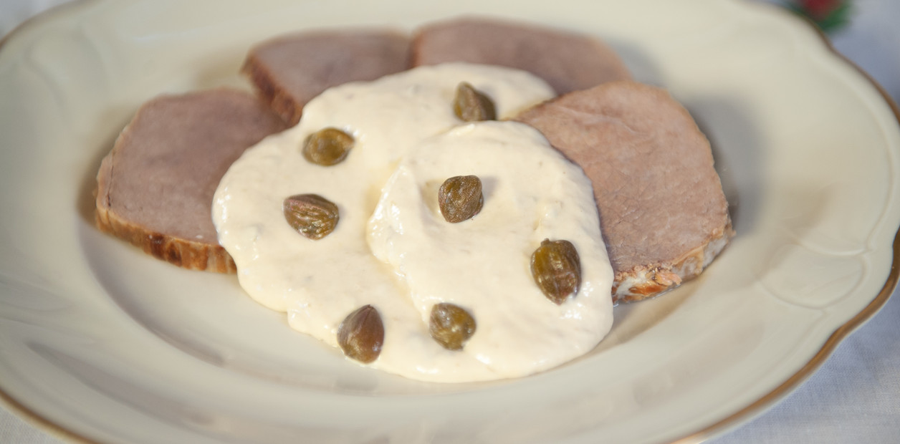

Inicio
Vitel Tone

Descripción
Cuando llegan las fiestas de Navidad y Año Nuevo el vitel toné se
transforma en un protagonista de las mesas familiares. Esta receta se
elabora con peceto pero si se desea preparar una versión más económica se
puede elaborar con lengua o con roast beef.
La versión saludable no lleva ni mayonesa ni crema, pero es muy sabroso
también. Incluso, se puede preparar sin anchoas, para los que prefieren
una crema de sabor más suave.
Ingredientes
- 1 peceto
- 1 vaso de vino blanco
- 1 puerro
- 3 zanahorias
- 1 rama de apio
- 1 cebolla
- 2 dientes de ajo
- 5 ramas de perejil
- Sal
- Hojas de laurel y granos de pimienta, a gusto
- Agua fría, cantidad necesaria
- 3 o 4 anchoas
- 1 lata de atún
- Caldo de cocción, cantidad necesaria
- 1 puñado de alcaparras y extra para decorar
- 1/2 taza de mayonesa
- 2 cucharadas de mostaza
- 6 cucharadas de crema de leche
Pasos
-
Desgrasar y atar el peceto con hilo para que conserve su forma. Sellar
en una olla hasta que dore y reservar.
-
Cortar groseramente las verduras y rehogarlas. Añadir un vaso de vino
blanco, el peceto y agua fría hasta cubrirlo. Sumar el laurel y la
pimienta. Dejar cocinar aproximadamente 60/80 minutos. Apagar el fuego y
dejar enfriar el peceto en el caldo para que quede jugoso.
-
La salsa. Mixear las anchoas, el atún y las alcaparras con un poco de
caldo de cocción. Añadir la mostaza y la mayonesa.
-
Integrar e ir agregando crema de leche hasta que tenga la consistencia
deseada.
-
El armado. Cortar el peceto frío en fetas finas e ir intercalando con la
salsa hasta terminar. Por encima decorar con alcaparras y, si se desea,
huevo duro picado.